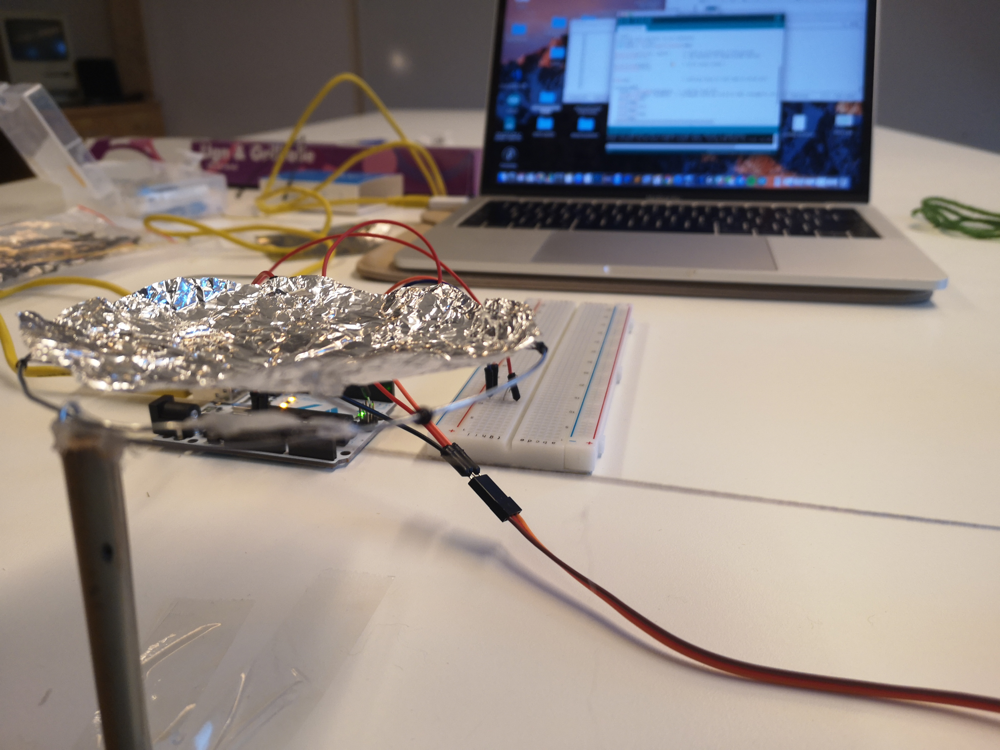

Project discription: The idea is about a plate which can sense the pouring water, and can change the shape into a bowl when there is water. The process goes very quikly, I spent an afternoon to make the prototype on arduino, using servo moter, capacitive sensor and cables

Water Sensing: The technology of water-sensing is based on capacitive sensing that can turn any conductive material into a sensor.